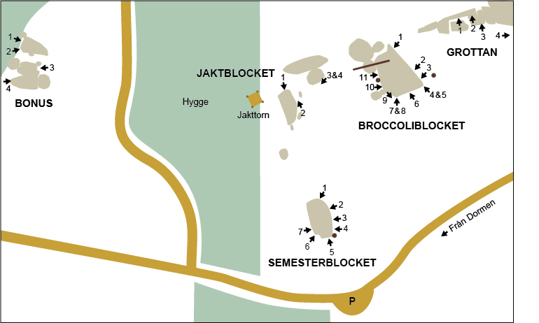

Axsjöblocken
Lat: 59.155846
Long: 14.582591
Allmänt
En trevlig samling block utanför Örebro med mestadels bra stenkvalitet. Här finns något för alla. Många enkla problem och ett par orepeterade testpieces och hårda projekt.
Huvudattraktionen är helt klart Broccoliblocket, ett stort fint hängande block med några roliga projekt och problem. Observera att fruktlösa försök har gjorts att nå markägaren, så parkera snyggt och håll er gärna borta under älgjakten!
Vägbeskrivning
<googlemap version="0.9" lat="59.155846" lon="14.582591" type="map" zoom="15">
http://
59.172324, 14.597536
Torhyttan, 716 94 Lekeberg, Sverige
59.154239, 14.58169
</googlemap>
Från Örebro, åk E18 mot Karlskoga och sväng av på väg 204 mot Fjugesta. En bit efter Mullhyttan sväng höger mot Torhyttan. Följ sedan skyltar mot Torhyttan i cirka 4 km. Sväng sedan av vänster mot Ölsdalen. Undvik första avtaget till vänster efter ca 200 meter. Här har folk kört fel! Efter 400 meter kommer en y-korsning. Parkera här, eller om du känner dig “behörig” kör vidare ca 400 meter till parkeringen på bilden nedan vid kalhygget. Semesterblocket syns från vägen. Alla projekt är öppna! Ut och sänd!
Boulderproblem

Semesterblocket
Första blocket som utvecklades. Mest lowballs där starten oftast sätter graden. Något borstat projekt finns att nypa i för den hugande spekulanten.
- 1
- Abdominizer
- 6A+
- Sittstart under areten. Höger hand på sloperkanten och vänster på någon av piggarna till vänster. Högerfoten på stort tydligt steg nere till höger. Jätteskick till slopern högt ovanför huvudet eller teknika dig upp längst kanten. Spänn absen ordentligt!
- 2
- Dyno-projekt
- ?
- Sittstarta med sned list för höger och sloper för vänster, hitta något att trycka ifrån med och dyna upp till de bubbliga greppen. Eller teknika dig upp för all del... Svårt.
- 3
- Herr Odon
- 6C
- Ser varken svårt eller fint ut, men det är just vad det är! Problemet är både balansigt, crimpigt och roligt. Starta på den tydliga limpan och vidare till crimparna. Högt flytt med vänster fot, nyp i ordentligt och mantla upp.
- 4
- Lättare än bergslagsleden
- 3
- Ståstart på det superlätta sva-aktiga problemet höger om tallen. Starten säkert svårare för korta.
- 5
- Dagen efter
- 4
- Ståstarta på via juggarna och sedan upp på balkongen och vidare till toppen. Sittstarta gärna från det stora tydliga greppet under balkongen via det sköna lilla flexande flaket för en något mustigare upplevelse i registret kring 6A+.
- 6
- Semesterfettot
- 5C
- Sittstart i minispricka för vänster hand och en knopp för höger. Rakt upp. Svårgraderad.
- 7
- Skrevaren
- 6A
- Sittstart med vänster hand i det härliga tydliga hålet och höger på en sidställd crimp långt till höger. Gärna ordentligt skrevande.
Jaktblocket
Blocken uppe vid jakttornet. Kanske inget man ringer och väcker polarna för, om man säger så...
- 1
- The jakttower
- 5C
- Sittstarta under den utskjutande areten, slappa uppåt åt vänster eller höger och mantla sedan till höger om den utskjutande "näsan". Säkert enklare om man är kort och slipper knöla med benen.
- 2
- All along the jakttower
- 5B
- Tänkbar trevlig uppvärmning. Starta sittande med fötterna på flaken och händerna på kanten och traversera runt första hörnet. Klurigt att få med sig fötterna, i alla fall om du är lång. Vila lite och sjunk sedan ner och klättra under "näsan" och mantla i The jakttower utan att bli för pumpad.
- 3
- Knottkaos
- 5C
- Traversera den inbjudande kanten på framsidan av det lilla blocket. Sittstarta med högerhanden i sprickan längs till höger på blocket, ta dig åt vänster och mantla längst bort. Se upp för knott!
- 4
- Myggmayhem
- 5A
- Sittstarta på samma sätt som för Knottkaos men mantla lätt rakt upp med hjälp av det tunna spricksystemet. Se upp för mygg!
Broccoliblocket
Axsjöns stolthet, utan tvekan. Stort block med grym kvalitet på större delen av blocket och en härlig arete på nedre vänstra hörnet. Högersidan går att utveckla mer. Ståstarter, hårda sittstarter går nog att göra här. Vid blocket finns också en trästege. Lägg gärna tillbaka den under stenen om du använder den.
- 0
- Blod, pepp och dårar
- 6B
- Sittstarta som Män som hatar crimpar. Men när du nypt crimplisten med vänstern, lägg upp höger tå och skicka höger hand ut på höger sida av areten. Jobba dig sedan upp till juggen på denna sida! Kul!
- 1
- Män som hatar crimpar
- 6C
- Sittstart under areten. Häv runt ut åt vänster till crimplisten och upp på den tydliga balkongen. Riktigt fint problem på en häftig formation. Ståstarten är också fin och håller nog i alla fall 5A.
- 2
- Arg & Svag
- 6A+
- Ståstart från två crimpar mitt på väggen. Håll till höger om sprickan uppe på blocket! Crimpa dig upp till den sköna sloperkanten och avsluta i tvärsprickorna ovanför slopern.
- 3
- Glad & stark
- 4
- Ståstart till höger om broccoliareten. Upp på blocket på bra grepp..
- 4
- Broccoli
- 5B
- Ståstart på den bubbliga areten. Bra startgrepp, sedan upp till slopers. Tung sittstart någon?
thumb|right|400px|Anders Örtegren kämpar med Hängbro, 6A+
- 5
- Hängbro
- 6A+
- Travers med start i Broccoli och sedan runt hela blockets framsida med utsteg i problemet In a Flash. Ett fint problem och en bra uppvärming. Det hasande kruxet är extremt beroendeframkallande!
- 6
- Högersväng förbjuden
- 5C
- Starta med båda häderna på det tydliga greppet i slutet av sprickan uppe på blocket. Skicka långt upp mot bra grepp i slutet av sprickan och undvik de stora greppen på det lilla blocket till höger.
- 7
- Axsjön directe
- 6C
- Sittstart med höger hand i sprickan under areten och vänster på en pinch. Vik paddan dubbel eller starta hängande om du inte når. Försök toppa ur rakt upp och inte till vänster för den totala upplevelsen. Ståstart håller ca 5C/6A.
- 8
- Extra bajsnödig sittstart
- 7A+
- Orepeterad och hård lågstart till Axsjön directe. Startar under blocket med vänsterhand i tvärsprickan och högerhand på sidtag/pinch, hook i taket med vänster fot och smear med höger fot på kanten, sedan upp i det vanliga problemet.
thumb|right|400px|Olof Erikssons enorma flapper som kvarlämnades efter FA:n på Flapper-SM
- 9
- Flapper-SM
- 7B+
- En till orepeterad tuffing. Start från tydligt flak under överhänget med händerna på flaket och fötterna i taket. Traversera via onda crimpar på det något lösa blocket och ett tålås på areten till vänster bort till Axsjön Directe och upp i denna. Knallhårt och coolt! Den gråaktiga stenen till vänster som blocket hänger på är eliminerad. Akta bakhuvudet i starten!
- 10
- In a flash
- 5C
- Sittstarta uppe på blocket till vänster om Flapper-SM och med vänsterhand i en bra - lite dold - spricka och höger på valfritt skräp. Sikta uppåt åt vänster på klykan och mantla sedan upp.
- 11
- Bockarna bruse
- 5B
- Kläm in dig mellan stenen och trädet, ståstarta på två undercling och sikta upp på den lösa, vassa och ganska obehagliga väggen.
Grottan
Till höger om Broccoliblocket finns en blockgrotta full med grävlingsbajs och spännande formationer. Dammigt och skitigt är det, men med möjlighet till några fantasifulla, hårda och höga problem. Till vänster om grottan bland flaken går det kanske att göra några problem till för den som är sugen på att borsta. En bit bort till höger finns en trevlig, men mossig svabulle att borsta ren också
- 1
- Svart måne
- 5A
- Sittstarta bakom blocket. Dammigt och lite sunkigt tills man kommer upp till bättre sten och en mantling som i alla fall nästan är rolig.
- 2
- Projekt: "Kylskåpet"
- ?
- Hängstart från den tydliga nischen längst in i grottan. Upp med händerna till väster och i sprickan i en brutalt tung kylskåpsposition. Grenom taket, ut på läppen och rakt upp på skölden som nu är helt borstad. Kommer bli hårt, tungt och högt! Vem blir först?!
- 3
- Jugget som sprucket
- 6A
- Ståstarta under sprickan. Ta tag i sprickans topp med vänster hand och böka upp dig på balkongen för en inte helt opirrig och lite mossig mantling med skumma rörelser. Når man inte sprickans topp får man antagligen jamma lite varpå graden säkert hoppar upp något snäpp. Vägen upp från balkongen till toppen bjuder också på visst motstånd.
- 4
- Innan regnet faller
- 5C
- Knalla 50 meter längst klippan tills ett tydligt renborstat sva uppenbarar sig till vänster. Innan regnet faller är den tydligaste linjen mitt på med start i botten av sprickformationen och rakt upp. Lite pirrigt. Speciellt utan spotter. Kan behöva en vinter innan all smuts försvinner.
Bonus
Om man fortsätter förbi kalhygget kommer en pytteliten väg på höger sida. Följ denna upp till en knix. Mitt i knixen syns ett annat kalhygge till vänster om vägen. Där finns också Bonusblocken. Några få fina linjer, och potential för nya problem utan mossa. Helt klart värt de fem minuterna extra. Parkera på samma plats som för de andra blocken eller trotsa den gräsbeklädda vägen och parkera i knixen.
thumb|right|400px|Erik Hagelin fotarbetar under förstabestigningen av Farsans flygande fötter, 5C
- 1
- Farsans flygande fötter
- 5C
- Ståstarta med en list för fötterna och en list för händerna. Rakt upp. Kanten är eliminerad! Jobba högt med fötterna.
- 2
- Morsans mysiga mantling
- 5A
- Ta tag i den uppenbara jugglisten för händerna. Få upp fötterna på slopern och gå vidare upp. Sittstarten är gjord och håller ca 6B och inkluderar en oerhört arg, köttätande crimp på vänster sida om areten. Det gör antagligen inte problemet så värst mycket roligare eller finare.
- 3
- Gymnastik i kubik
- 5C
- Extremt mycket klättring på väldigt få centimeter. Släng dig på rygg i grottan och ta tag i den utskjutande näsan. Lås fötterna i taksprickan till vänster och pincha kanten. Lägg nu upp vänster häl på näsan och kötta dig upp eller använd kanten. Gymnastiskt, kort och kul! Testa!
- 4
- Frossa i mossa
- 5C
- Sittstarta under lilla areten och kötta upp. Kul och lite tungt!
Kategori:Bouldering
Kategori:Närke
Kategori:vertikalt
Kategori:överhäng
kategori:Saknar skrivarformatering